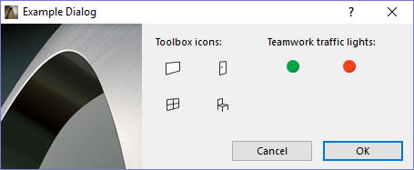
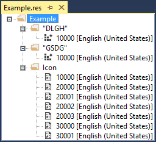

Graphisoft Resource Compiler Example on Windows
In this example, we will create a native binary Windows resource for an Example dialog, which contains few icons, a picture, text items and two buttons:

The resource files corresponding to this dialog are:
- ExampleGRC.grc: this GRC file contains the localizable resources ('GDLG' and 'DLGH')
- ExampleFixGRC.grc: this GRC file contains the non-localizable resources ('GICN')
- Example.rc2: Windows resource descriptor file to join the localizable and non-localizable resources together
The result will be a Windows resource file (.res), which contains the native image resources and the dialog resources:

Note that the Resource Compiler can handle only one input file per one run.
We compile the resources in three steps. Later, every step is thoroughly explained:
- Step: Compile the non-localizable GRC file with ResConv tool
ResConv.exe -m r -t W -q utf8 1252 -d WINDOWS -p .\RFIX\Images -i .\RFIX\ExampleFixGRC.grc -o .\RO\ExampleFixGRC.grc.rc2
- Step: Compile the localizable GRC file with ResConv tool
ResConv.exe -m r -t W -q utf8 1252 -d WINDOWS -i .\RINT\ExampleGRC.grc -o .\RO\ExampleGRC.grc.rc2
- Step: Compile .rc2 file using Windows Resource Compiler (RC)
rc.exe -I .\Src -I .\RO -Fo.\RO\ExampleGRC.res .\RFIX.win\Example.rc2
Every command should be typed as a single line into the command line.
- Step
- Input: ExampleFixGRC.grc, images (10000.png, WallTool_18x18.svg, DoorTool_18x18.svg, WindowTool_18x18.svg, ObjectTool_18x18.svg, TWEditable_16x16.svg, TWLocked_16x16.svg)
- Output: ExampleFixGRC.grc.rc2, native icon files (10000.ico, WallTool.ico, DoorTool.ico, WindowTool.ico, ObjectTool.ico, TWEditable.ico, TWLocked.ico)
In this step the native Windows .rc2 resource descriptor file is translated from the non-localizable GRC file and image conversions take place. From the information in the GRC file and the image sources, ResConv creates native Windows resource files (.ico, .cur, etc.).
 The possible source image formats of an icon resource are PNG and SVG. For further information, read how to compile icon resources.
The possible source image formats of an icon resource are PNG and SVG. For further information, read how to compile icon resources.The first parameter (-m r) specifies the converter operation mode of the ResConv (-m r is the default, so you may omit that). The second option is important, we instruct the compiler to convert to Windows platform, so it knows that it should generate native resources and a native resource descriptor file, as mentioned the paragraph above. We could add the output codepage and some #define's also. The -p parameter defines the path to the source images. And finally the last two parameters specify the input and the output files.
- Step
- Input: ExampleGRC.grc
- Output: ExampleGRC.grc.rc2
In this step the native Windows .rc2 resource descriptor file is translated from the localizable GRC file.
Parameters are the same as described in the first step, but here no need to define the path of the images.
- Step
- Input: Example.rc2
- Output: Example.res
This step is for completeness. We should further compile the output of the previous steps into a native Windows .res file with the Microsoft Resource Compiler (rc.exe). Example.rc2 joins the output of the previous steps together.
For the explanation of the parameters, see the details for RC in MSDN.
{kind=link}
{kind=link}
{kind=link}
{kind=link}
{kind=link}
{kind=link}
{kind=link}
We are ready!
We can integrate these steps into a batch file. The various file names, directories and defined parameters can be parameters for this batch file too. The process can be also be summarized in a .msc Windows makefile, and then can be executed by NMAKE. nmake will automatically watch for the changes of the files, and will only take the necessary steps to build the resources.